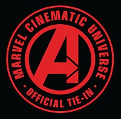

Marvel Cinematic Universe tie-in comics
The Marvel Cinematic Universe (MCU) tie-in comic books are limited series or one-shot comics published by Marvel Comics that tie into the films and television series of the MCU. The comics are written and illustrated by a variety of individuals, and each one consists of 1 to 4 issues. They are intended to tell additional stories about existing characters, or to make connections between MCU projects, without necessarily expanding the universe or introducing new concepts or characters.
| Marvel Cinematic Universe tie-in comics | |
|---|---|
|  | |
| Publication information | |
| Publisher | Marvel Comics |
| Format | Limited series One-shots |
| Genre | |
| Publication date | 2008 – present |
| No. of issues | 1–4 |
| Main character(s) | Characters appearing in the MCU |
{kind=link}
The first MCU tie-in comics to be published were Iron Man: Fast Friends, The Incredible Hulk: The Fury Files, and Nick Fury: Spies Like Us, all in 2008. They were followed by an adaptation of Iron Man in 2010, along with Iron Man 2: Fist of Iron (2010), Iron Man 2: Public Identity (2010), Iron Man 2: Agents of S.H.I.E.L.D. (2010), Captain America: First Vengeance (2011), Captain America & Thor: Avengers (2011), The Avengers Prelude: Fury's Big Week (2012), The Avengers Initiative (2012), The Avengers Prelude: Black Widow Strikes (2012), and an adaptation of Iron Man 2 (2012). Comic tie-ins for Marvel's television series began in 2014 with Agents of S.H.I.E.L.D.: The Chase, followed by Jessica Jones (2015).
Marvel changed its approach to film tie-in material in 2012, retroactively dividing the tie-in comics into those that exist within the MCU continuity, and those that are merely inspired by the films and television series. Since then, Iron Man 3 Prelude (2013), Thor: The Dark World Prelude (2013), Captain America: The Winter Soldier Infinite Comic (2014), Guardians of the Galaxy Infinite Comic (2014), Guardians of the Galaxy Prelude (2014), Avengers: Age of Ultron Prelude – This Scepter'd Isle (2015), Ant-Man Prelude (2015), Ant-Man – Scott Lang: Small Time (2015), Captain America: Civil War Prelude Infinite Comic (2016), Doctor Strange Prelude (2016), Doctor Strange Prelude Infinite Comic (2016), Black Panther Prelude (2017), and Avengers: Infinity War Prelude (2018) have been released in the former category, along with film adaptations of Thor (2013), Captain America: The First Avenger (2013), The Avengers (2014–15), Iron Man 3 and Captain America: The Winter Soldier (2015–16), Guardians of the Galaxy (2017), Captain America: Civil War (2017), The Incredible Hulk (2017), Thor: The Dark World (2017), Ant-Man (2018), and Avengers: Infinity War (2018–19).
DevelopmentEdit
—Marvel Comics editor-in-chief Joe Quesada outlining his plan for the MCU comic books in November 2010.[1]
In 2008, Marvel released Iron Man: Fast Friends, a comic prequel to Iron Man, for which writer Paul Tobin was given a broad outline and some "temporal staging" so as to allow the comic to tie into the film.[2] Later that year, The Incredible Hulk: Fury Files, which serves as a prequel to The Incredible Hulk, was released, detailing an encounter between the Hulk and Nick Fury, characters who had not yet been seen together in the MCU. Writer Frank Tieri noted that the tie-in comics "provide Marvel with the opportunity to do a lot of different things" that other media do not, including the exploring of non-superhero genres and the reintroducing of older characters.[3]
Alejandro Arbona, the Marvel editor tasked with overseeing the 2010 tie-in comics Iron Man 2: Public Identity and Iron Man 2: Agents of S.H.I.E.L.D., explained that Marvel "want to show readers more of that world, that connective tissue between all the movies, and a little bit more of how the characters interact", so the publishing side worked with Brad Winderbaum, Jeremy Latcham, and Will Corona Pilgrim at Marvel Studios to decide which concepts should be carried over from the Marvel Comics Universe to the Marvel Cinematic Universe, what to show in the tie-in comics and what to leave for the films, and how to "make these stories as strong as possible" from their experience making the films.[4]
For Marvel's The Avengers in 2012, Marvel's senior vice-president of sales David Gabriel described a "more focused" approach to tie-ins than previously, with the intention to reach fans of 'all walks of life'. This was echoed by Rich Thomas, global editorial director at Disney Publishing, who wanted the Avengers program to be "all things to all people. Just like the film, from the youngest reader...to the Marvel enthusiast."[5] Since then, many of the tie-ins have had the red 'Avengers' stamp on the cover.[6] Pilgrim, the creative director of research and development at Marvel Studios, confirmed that the previously released Public Identity, Agents of S.H.I.E.L.D., and First Vengeance, were all official MCU stories,[7] with the other previously released tie-in comics considered to be inspired by the MCU only.[8]
—Captain America: The First Avenger co-producer Stephen Broussard in February 2011, on the conception of the tie-in comics.[9]
Comic writer Fred Van Lente stated in 2013 that he had proposed a regular comic series set within the MCU to Marvel, but they wished to keep all possibilities open for potential film and television development. He said that this was also the reason why Marvel does not want writers to introduce new elements to the MCU through tie-in comics.[10] In March 2014, Pilgrim confirmed that the MCU Infinite Comics were officially canon.[11] That July, the MCU tie-in comics expanded to television tie-ins with the release of Agents of S.H.I.E.L.D.: The Chase, a comic inspired by the first season of Agents of S.H.I.E.L.D.[12][13] In November, Marvel Comics Editor-in-Chief Axel Alonso avoided a question of whether an ongoing comic series could be set within the MCU, but did note that Marvel Comics would "always be working on books set in the Cinematic Universe...the collected editions of those comics end up being some of the best sellers of the year".[14]
In February 2015, Pilgrim clarified that the canon tie-ins "are considered official MCU canon stories" set in the same universe as the films and television series, whereas the other, "inspired by" tie-ins are "more about having another fun adventure with the Avengers....where we get to show off all the characters from the film in costume and in comic form", but not affect the official MCU continuity.[15]
Marvel Cinematic Universe-set titlesEdit
| Title | Issue(s) | Publication date(s) | Writer(s) | Artist(s) | |
|---|---|---|---|---|---|
| First published | Last published | ||||
| Iron Man: I Am Iron Man! | 2 | January 27, 2010 | February 24, 2010 | Peter David[16] | Sean Chen[16] |
| Iron Man 2: Public Identity | 3 | April 28, 2010 | May 12, 2010 | Joe Casey and Justin Theroux[17] | Barry Kitson[17] |
| Iron Man 2: Agents of S.H.I.E.L.D. | 1 | September 1, 2010 | Joe Casey[17] | Tim Green, Felix Ruiz, and Matt Camp[17] | |
| Captain America: First Vengeance | 4 | May 4, 2011 | June 29, 2011 | Fred Van Lente[18] | Neil Edwards[19] and Luke Ross[20] |
| Marvel's The Avengers Prelude: Fury's Big Week | 8 (digital), 4 ("chapters" in paper) | March 7, 2012 | April 18, 2012 | Story by: Christopher Yost and Eric Pearson[21] Scripts by: Eric Pearson[21] |
Luke Ross[22] |
| Marvel's The Avengers: Black Widow Strikes | 3 | May 2, 2012 | June 6, 2012 | Fred Van Lente[23] | Neil Edwards[24] |
| Marvel's Iron Man 2 | 2 | November 7, 2012 | December 5, 2012 | Christos N. Gage[25] | Ramon Rosanas[25] |
| Marvel's Thor | 2 | January 16, 2013 | February 20, 2013 | Christos N. Gage[26] | Lan Medina[27] |
| Marvel's Captain America: The First Avenger | 2 | November 6, 2013 | December 11, 2013 | Peter David[28] | Wellinton Alves[28] |
| Marvel's The Avengers | 2 | December 24, 2014 | January 7, 2015 | Will Corona Pilgrim[29] | Joe Bennett[29] |
| Marvel's Iron Man 3 Prelude | 2 | January 2, 2013 | February 6, 2013 | Christos N. Gage[26] | Steve Kurth[26] |
| Marvel's Thor: The Dark World Prelude | 2 | June 5, 2013 | July 10, 2013 | Craig Kyle and Christopher Yost[30] | Scot Eaton[30] and Ron Lim[31] |
| Marvel's Captain America: The Winter Soldier Infinite Comic | 1 | January 28, 2014 | Peter David[32] | Rock He-Kim[32] | |
| Marvel's Guardians of the Galaxy Infinite Comic – Dangerous Prey | 1 | April 1, 2014 | Dan Abnett and Andy Lanning[33] | Andrea Di Vito[33] | |
| Marvel's Guardians of the Galaxy Prelude | 2 | April 2, 2014 | May 28, 2014 | Dan Abnett and Andy Lanning | Wellinton Alves[34] |
| Marvel's Avengers: Age of Ultron Prelude – This Scepter'd Isle | 1 | February 3, 2015 | Will Corona Pilgrim[35] | Wellinton Alves[35] | |
| Marvel's Ant-Man Prelude | 2 | February 4, 2015 | March 4, 2015 | Will Corona Pilgrim[36] | Miguel Sepulveda[36] |
| Marvel's Ant-Man – Scott Lang: Small Time | 1 | March 3, 2015 | Will Corona Pilgrim[37] | Wellinton Alves and Daniel Govar[37] | |
| Marvel's Jessica Jones | 1 | October 7, 2015 | Brian Michael Bendis[38] | Michael Gaydos[38] | |
| Marvel's Captain America: Civil War Prelude | 4 | December 16, 2015 | January 27, 2016 | Will Corona Pilgrim[39] | Szymon Kudranski[39] and Lee Ferguson[40][41] |
| Marvel's Captain America: Civil War Prelude Infinite Comic | 1 | February 10, 2016 | Will Corona Pilgrim[42] | Lee Ferguson, Goran Sudžuka, and Guillermo Mogorron[42] | |
| Marvel's Doctor Strange Prelude | 2 | July 6, 2016 | August 24, 2016 | Will Corona Pilgrim[43] | Jorge Fornés[43] |
| Marvel's Doctor Strange Prelude Infinite Comic – The Zealot | 1 | September 7, 2016 | Will Corona Pilgrim | Jorge Fornés | |
| Marvel's Guardians of the Galaxy Vol. 2 Prelude | 2 | January 4, 2017 | February 1, 2017 | Will Corona Pilgrim[44] | Christopher Allen[45] |
| Spider-Man: Homecoming Prelude | 2 | March 1, 2017 | April 5, 2017 | Will Corona Pilgrim[46] | Todd Nauck[46] |
| Marvel's Thor: Ragnarok Prelude | 4 | July 5, 2017 | August 16, 2017 | Will Corona Pilgrim[47] | J.L. Giles[47] |
| Marvel's Black Panther Prelude | 2 | October 18, 2017 | November 15, 2017 | Will Corona Pilgrim[48] | Annapaola Martello[48] |
| Marvel's Avengers: Infinity War Prelude | 2 | January 24, 2018 | February 28, 2018 | Will Corona Pilgrim[49] | Tigh Walker[50] and Jorge Fornés[51] |
| Marvel's Ant-Man and the Wasp Prelude | 2 | March 7, 2018 | April 4, 2018 | Will Corona Pilgrim[52] | Chris Allen[52] |
| Marvel's Captain Marvel Prelude | 1 | November 14, 2018 | Will Corona Pilgrim | Andrea Di Vito | |
| Marvel's Avengers: Endgame Prelude | 3 | December 5, 2018 | February 20, 2019 | Will Corona Pilgrim | Paco Diaz[41] |
| Spider-Man: Far From Home Prelude | 2 | March 27, 2019 | April 24, 2019 | Will Corona Pilgrim | Luca Maresca |
| Marvel's Black Widow Prelude | 2 | January 15, 2020 | February 19, 2020 | Peter David | C.F. Villa |
AdaptationsEdit
Several comics adapting the story of the films have been released: Iron Man: I Am Iron Man!, an adaptation of Iron Man;[16] Marvel's Iron Man 2, an adaptation of Iron Man 2;[25] Marvel's Thor, an adaptation of Thor;[27] Marvel's Captain America: The First Avenger, an adaptation of Captain America: The First Avenger;[28] Marvel's The Avengers, an adaptation of The Avengers;[29] Marvel's Captain America: Civil War Prelude, an adaptation of both Iron Man 3 and Captain America: The Winter Soldier;[39] Marvel's Guardians of the Galaxy Vol. 2 Prelude, an adaptation of Guardians of the Galaxy,[53] Spider-Man: Homecoming Prelude, an adaptation of Captain America: Civil War;[46] Marvel's Thor: Ragnarok Prelude, an adaptation of both The Incredible Hulk and Thor: The Dark World,[54] Marvel's Ant-Man and the Wasp Prelude, an adaptation of Ant-Man,[55] Marvel's Avengers: Endgame Prelude, an adaptation of Avengers: Infinity War,[56] and Spider-Man: Far From Home Prelude, an adaptation of Spider-Man: Homecoming.[57]
In January 2015, Pilgrim explained the process for adapting films into tie-in comics, noting that scripts and other behind-the-scenes material are referenced in addition to the actual films. Because of this, the adaptations sometimes have new scenes, which Marvel "felt strongly enough" to include as canon, even though they were never filmed. Examples include an interaction between Jasper Sitwell and Nick Fury in Iron Man: I Am Iron Man!, the "Boys Flight Out" sequence from Iron Man 2, where Tony Stark invites James Rhodes to wear the Iron Man Mark II armor,[58] and an additional interaction set during Captain America: Civil War between Peter Parker and his Aunt May in Spider-Man: Homecoming Prelude.
Iron Man 2: Public Identity (2010)Edit
Decades ago, Howard Stark worked with Anton Vanko to build the first arc reactor, but when Howard realized Vanko's greedy goals, he had him arrested and deported before, at the urging of Obadiah Stane, returning to the business of arms dealing that made him so successful in the past. In the present, Stark's son Tony uses the arc reactor technology to power his Iron Man armor, and after revealing this identity to the world, becomes a public hero. U.S. General Thaddeus Ross commissions Stark's business rival Justin Hammer to build a single-pilot vehicle to replace Iron Man, who has been interfering with and causing trouble for the military. When testing the new vehicle, the pilot crash lands in unfriendly territory, under attack from the Congolese army. Tony saves the airman, but, to the chagrin of Ross, refuses to return the Congolese soldiers' fire. Director Nick Fury and Agent Phil Coulson of S.H.I.E.L.D. later review Stark's actions.[59][60][61]
Public Identity was written by Joe Casey and Justin Theroux, with art by Barry Kitson,[17] and the three issues were published on April 28,[62] May 5,[63] and May 12, 2010,[64] respectively. Theroux, who wrote the screenplay for Iron Man 2, was able to show Casey "a fairly finalized script" before the two began work on the tie-in.[17] In May 2010, Alejandro Arbona, who oversaw the creation of the comic, explained that the story of the tie-ins had to come "organically from the stuff that happened in Iron Man —what would happen to a man who'd just revealed his super hero identity to the world?—and it had to move us toward the stuff we knew was going to be important in Iron Man 2".[4] In September 2010, Casey noted that writing an MCU tie-in comic required working within the boundaries of the movie continuity and Marvel Studios' plan, as well as writing the characters as portrayed in the films (the "movie version of Stark has a specific attitude" that Casey tried to put in the comic, for example).[17]
The comic, set after Iron Man but before Iron Man 2 and The Incredible Hulk, was conceived to explain the post-credits scenes of Iron Man and The Incredible Hulk, where Tony Stark meets Nick Fury for the first time but General Ross not for the first time, respectively.[15] Arbona said that "when Tony Stark spoke to General Ross at the end of The Incredible Hulk, you could tell they already knew each other; they spoke about some shared history they'd had together. Well in Iron Man 2: Public Identity you see when they first meet, and what that shared history is."[4] This comic explains that the AI J.A.R.V.I.S. was created in memory of Edwin Jarvis, introduced here as Howard Stark's butler. A younger version of the character appears in Agent Carter, portrayed by James D'Arcy.[65]
Iron Man 2: Agents of S.H.I.E.L.D. (2010)Edit
Nick Fury plants a S.H.I.E.L.D. agent aboard a Ten Rings-controlled vessel in the Gulf of Aden in an effort to get a live account of Iron Man in action, while Tony Stark is keeping an eye on S.H.I.E.L.D. himself.[66] Phil Coulson monitors the first field operation of a S.H.I.E.L.D. recruit who is tasked with taking down a Ten Rings terrorist cell on American soil, which Coulson later reveals was a set up, a common S.H.I.E.L.D. test for new recruits.[67] Natasha Romanoff infiltrates Stark Industries under the alias of Natalie Rushman, using her spy skills to quickly work her way up the company until she meets with Stark personally.[68]
Agents of S.H.I.E.L.D. was written by Joe Casey and released on September 1, 2010.[69] It consists of three, eight-page stories, each spotlighting a different character:[70] Nick Fury in "Who Made Who", with art by Tim Green; Phil Coulson in "Just Off the Farm", with art by Felix Ruiz; and Natasha Romanoff in "Proximity", with art by Matt Camp.[69] Casey said of the short stories, "The movie studio is very aware of what they're doing, so they paid close attention...It's not exactly the Marvel Universe I grew up with, [but] it's not like the Ultimate universe either. It's a brand new thing, with its own rules and its own continuity."[17]
The end of "Proximity" depicts Romanoff, working undercover in the legal department of Stark Industries, meeting with Tony Stark in his home gym. This is also the scene in Iron Man 2 where the character is introduced, the story therefore acting as a direct prequel / parallel story to the film.[70]
Captain America: First Vengeance (2011)Edit
In 1944, as he attacks a Hydra base in the Nazi-occupied Danish Straits, Steve Rogers recalls parts of his life that got him to this point: his mother's blessing to become a soldier; his first meeting with Bucky Barnes, who protected him from bullies as a boy; the day after Pearl Harbor was bombed, when Bucky and Steve decided to enlist; Bucky training Steve to pass the physical; and the point when Bucky passed the physical but Steve failed.[71] Johann Schmidt watches Rogers fight, and recalls how he got to this point: meeting Adolf Hitler; capturing Arnim Zola to research creating super soldiers; and finding Abraham Erskine and blackmailing him into continuing his super soldier research under the employ of the Nazis.[72] Howard Stark, via radio, assists Rogers, remembering when he was recruited by Colonel Phillips to join the Strategic Scientific Reserve, and when he helped Peggy Carter rescue Erskine from Schmidt.[73] Dum Dum Dugan and the Howling Commandos arrive to assist Rogers, and they remember their formation—thrust together in a Hydra work camp, forming close friendships after a failed escape attempt. After they defeat the Hydra soldiers, Rogers destroys Schmidt's main weapon at the base, an Asgardian artifact.[74]
First Vengeance was written by Fred Van Lente,[18] with art for the first half of the comic by Neil Edwards,[19] and by Luke Ross for the rest.[20] The first of eight digital issues was released on February 6, 2011,[9] with the other seven subsequently released on February 16,[75] March 2,[76] March 23,[77] June 8,[78] July 6,[79] July 13,[80] and July 20,[81] respectively. The comic was also published in four issues on May 4,[19] May 18,[82] June 15,[20] and June 29, 2011,[83] respectively. On what the comic covers, Captain America: The First Avenger co-producer Stephen Broussard explained that there were "lots of little side stories" that they found fascinating but didn't fit into the story of the film, so the comic allows those to be told. These side stories include some backstory to the film, some action running parallel to the film, and some hints at "things to come", and are "all sort of jumbled up". Van Lente read the film's script, and had his own comic scripts overlooked by Quesada and Broussard, to keep the comic in line with the film.[9] Some of Van Lente's initial ideas, when he felt that he could do anything because of the comic medium, had to be changed due to not fitting into the realistic world of the MCU,[15] a process Van Lente described as "making comics on a budget".[15]
Van Lente stated, "What's neat about the MCU, just like in the comics' universe, is the interconnections between various movies, particularly Iron Man 2 and Thor. You'll start to see those coming out in First Vengeance."[9] On the differences between the MCU and original versions of the characters, Van Lente noted that when Joe Simon and Jack Kirby originally created Captain America, they "didn't have 20/20 hindsight to see how things would fit together with the Marvel characters to follow. With the MCU, we're able to make those connections and heighten all of the characters' weight."[18]
Marvel's The Avengers Prelude: Fury's Big Week (2012)Edit
Fury's Big Week was written by Christopher Yost and Eric Pearson,[21] and was released digitally in eight issues, on February 5 (tying-into the wider The Avengers marketing campaign, which released a new trailer on that day), February 14, February 21, February 28, March 5, March 12, March 19, and March 26, 2012, respectively.[84] The comic was published in hard copy as four issues on March 7,[22] March 21,[85] April 4,[86] and April 18, 2012,[87] respectively. The comic retells the events of The Incredible Hulk, Iron Man 2, Thor, and Captain America: The First Avenger from the point-of-view of S.H.I.E.L.D., with extra scenes added to weave them all together.[21]
Marvel's The Avengers: Black Widow Strikes (2012)Edit
Natasha Romanoff is taken by surprise in Russia when her target is killed by a "fan" of hers named Sofia. Breaking contact with her S.H.I.E.L.D. superiors, Romanoff begins a competition with Sofia for the mantle of the "Black Widow", discovering that Sofia's employer is selling the parts for a new missile to the Ten Rings. Romanoff tracks Sofia to a missile launch site targeting North Korea, where she stalls long enough for S.H.I.E.L.D. to intervene. Sofia is killed in the ensuing chaos.[88][89][90]
Written by Fred Van Lente, with art by Neil Edwards,[23][24] the comic (which is set in Romanoff's native Russia) first appeared in copies of the Maxim Russia magazine, before being released as a traditional, three-issue comic series[23] on May 2,[24] May 16,[91] and June 6, 2012,[92] respectively. The decision was made to give Romanoff her own comic ahead of The Avengers because Marvel felt that she "remains the most enigmatic of the Avengers" despite appearing in previous films. Van Lente explained the relationship between Black Widow Strikes and the films by saying, "This is on the same scale as the Marvel movies. We're working closely with Marvel Studios to have it integrate seamlessly with the Marvel Cinematic Universe. Once this is over, they're welcome to use any of my ideas here for a movie." Van Lente took inspiration "from Joss Whedon's script for Marvel's the Avengers, which I was lucky enough to read. He does a good job making her inclusion on the team perfectly believable."[23]
Black Widow Strikes is set between Iron Man 2 and The Avengers, and deals with "some loose ends from Iron Man 2, namely some bootleg Stark technology that Justin Hammer made.[23] The idea of the "Black Widow" being more of a mantle than the codename of a single agent is further explored in Agent Carter, where an early Black Widow training program is introduced, and in Avengers: Age of Ultron, where some of Romanoff's training is shown through flashbacks.[93][94]
Marvel's Iron Man 3 Prelude (2013)Edit
Tony Stark becomes occupied as he begins construction of Stark Tower in New York, so James Rhodes picks up where Iron Man left off in the fight against the Ten Rings terrorist organisation. After 10 months of skirmishes across the world, Rhodey is ambushed in Hong Kong by Ten Rings agents with Hammer Technology, including a nuclear powered tank. Rhodey manages to get the tank out of the city before the insurgents detonate its power source, and returns to America in time to find the aftermath of the Battle of New York. Later, Tony reveals to Rhodey his plans for an Iron Legion, and a Ten Rings operative reports to his master, The Mandarin, informing him that they have full scans of the Stark Technology in Rhodey's suit.[95][96]
Iron Man 3 Prelude was written by Christos Gage, with art by Steve Kurth, with the first issue released on January 2, 2013,[26] and the second on February 6.[97]
Marvel's Thor: The Dark World Prelude (2013)Edit
In the year following the destruction of the Bifrost, the Asgardian means of transportation throughout the cosmos, both the nine realms and nearby planets have fallen into chaos, while astrophysicist Jane Foster has failed in her attempts to re-open a wormhole in New Mexico, an action requiring the Bifrost to be functional. When the presumed dead Loki attacks Earth and steals the Tesseract, Odin uses the secret, dangerous power of Dark Energy to send Thor to intervene. Following the Battle of New York, Thor returns to Asgard with Loki and the Tesseract. Loki is imprisoned in the dungeons to serve a life sentence, while Thor uses the Tesseract's power to repair the Bifrost and allow Asgard to bring order back to the nine realms and beyond.[98][99]
Thor: The Dark World Prelude was written by Craig Kyle and Christopher Yost, with the first issue released on June 5, 2013, with art by Scot Eaton,[30] and the second on July 10 with art by Ron Lim.[31]
Marvel's Captain America: The Winter Soldier Infinite Comic (2014)Edit
Following the Battle of New York, Steve Rogers is working with Natasha Romanoff and Brock Rumlow for S.H.I.E.L.D. When a terrorist group steals the Zodiac virus from S.H.I.E.L.D., the team track them to Willis Tower in Chicago where they take them out and recover the virus.[100]
Peter David writes Captain America: The Winter Soldier Infinite Comic, with art by Rock-He Kim. The comic was published on January 28, 2014, and sees David set up key themes for Captain America: The Winter Soldier: "Black Widow and Rumlow...They're okay with doing what they're told. Cap, however, is way more suspicious and wants a clearer idea of what's going on, and is annoyed that S.H.I.E.L.D. isn't big on being forthcoming." On Cap's relationships with new partners Black Widow and Brock Rumlow, "I think he sees her as a valued ally, but [he] tends to be suspicious of the outfit that she works for. He trusts her as someone to have his back in a fight, but I think also believes that if S.H.I.E.L.D. told her to put a knife in his back, she would do so without hesitation, and that can be problematic. Rumlow, meantime, is an eager partner, but Cap doesn't trust him at all. First, there's the suspicion aspect. And second, I think Cap is still gun-shy because the last time he had a partner. Bucky wound up dying—or at least so he believes—and he's not anxious for history to repeat itself."[32]
The Zodiac virus featured heavily in the comic was first introduced to the MCU in the Marvel One-Shot Agent Carter, where it is recovered by the titular character for the SSR, the precursor to S.H.I.E.L.D.[101]
Marvel's Guardians of the Galaxy Infinite Comic – Dangerous Prey (2014)Edit
With one Infinity Stone, the Aether, in his possession, the Collector actively searches for the other five, and when he discovers the Orb to be on a desolate planet, he hires the assassin Gamora to retrieve it.[102]
Dan Abnett and Andy Lanning, who revived the Guardians of the Galaxy series in 2008, agreed to write the tie-in comic preludes to the film Guardians of the Galaxy, as a favor to director James Gunn.[34] The Infinite Comic was released on April 1, 2014, and features art by Andrea De Vito.[33]
Marvel's Guardians of the Galaxy Prelude (2014)Edit
Issue 1 sees Nebula, while searching for the Orb, remembering growing up with Gamora and their father, Thanos, as well as her recent experiences with Ronan the Accuser. Issue 2 follows Rocket and Groot as bounty hunters in the lead-up to Guardians of the Galaxy.[103][104]
This film prelude was also written by Dan Abnett and Andy Lanning, with Lanning writing the plots based on brainstormed ideas, and Abnett writing the final scripts.[105] With art by Wellinton Alves,[34] the issues were published on April 2 and May 28, 2014, respectively.[106][107] The stories were intended to flesh out the history of the film characters based on the details in Gunn's script,[34] while Abnett also attempted to bridge the feeling of the film with that of the original comics.[105] Speaking on working with familiar characters, but now the film versions of them, Abnett said, "[It's] Fun, but a little odd. The characters of the Prelude comics had to fit very cleanly to the movie versions so there wasn't quite the same opportunity for madcap invention...I had to make sure the tone fitted precisely." Lanning said, "There's a definite distinction between the Marvel comic universe and the Marvel Cinematic universe...[but] these characters are not so distant to their comic counterparts as to be unrecognizable, they are more like an alternate version, similar to what the Ultimate Universe did."[34]
Marvel's Avengers: Age of Ultron Prelude – This Scepter'd Isle (2015)Edit
Following the Battle of New York, a disgruntled S.H.I.E.L.D. scientist studying Loki's scepter and its connection to the Tesseract is recruited by Hydra to steal the scepter. With it in the possession of high-ranking Hydra member Baron Wolfgang von Strucker, Hydra begins experimenting on the scepter, eventually using it to unlock special abilities within two volunteers, the twins Pietro and Wanda Maximoff.[108]
Released on February 3, 2015, this comic is written by Pilgrim and illustrated by Wellinton Alves.[35]
Marvel's Ant-Man Prelude (2015)Edit
During the Cold War, when Howard Stark demands the Pym Particle Suit, created to shrink its wearer, from S.H.I.E.L.D. scientist Hank Pym to take down radicals in Soviet-occupied Germany who are reverse-engineering Hydra technology, Pym insists on carrying out the mission himself to keep his invention out of the wrong hands.[109] Crossing the Berlin Wall and infiltrating the enemy compound, Pym discovers the plans for Hydra memory suppression technology, and makes his way to a secret lab where the reverse-engineered machine is being tested. Taking out the radicals using the suit's size-changing properties, Pym destroys the technology so that no one can use it. Pym then decides to continue taking missions for S.H.I.E.L.D.[110]
Ant-Man Prelude was written by Pilgrim and illustrated by Miguel Sepulveda,[58] with the two issues released on February 4 and March 4, 2015, respectively.[111][112] The comic was conceived to show Pym using the suit and to explain the quandary that comes with having his technology, to lead up to the film. Though a specific year that the comic takes place in is never specified, Pilgrim explained that it is set in the mid 1980s, when Mikhail Gorbachev served as Soviet leader. Pilgrim described the comic as a "spy action story" with some "thriller elements".[15] Pilgrim wanted the comic to feature the Berlin Wall prominently following a childhood experience with an exhibit recreating part of it.[58]
Hydra's interest in and experimentation with memory suppression technology was previously explored in the film Captain America: The Winter Soldier and the television series Agents of S.H.I.E.L.D. and Agent Carter.[113][114][115]
Marvel's Ant-Man – Scott Lang: Small Time (2015)Edit
After discovering that his employer is illegally overcharging its customers, and failing to expose the crime thanks to his boss's influence in the media, Scott Lang decides to steal the company's money and return it to the customers. During the robbery, Lang gets carried away and attempts to steal his boss's personal property, including his car. After accidentally crashing the car, Lang is caught and eventually imprisoned.[116]
An infinite comic written by Pilgrim, with art by Wellinton Alves and Daniel Govar, Scott Lang: Small Time was released on March 3, 2015.[37]
Marvel's Jessica Jones (2015)Edit
After being beaten by the devil of Hell's Kitchen, Turk Barrett is visited in the hospital by private investigator Jessica Jones, who has been hired by one of Barrett's baby mamas to get money from him to support their child.[117]
Prior to the release of Marvel's Jessica Jones television series, a Jessica Jones one-shot was released digitally on October 7, 2015, written by Brian Michael Bendis with art by Michael Gaydos, the original creators of the character. David Mack also returns from the original comic Alias as the cover artist. Print versions of the comic were exclusively handed out at New York Comic Con 2015. Bendis explained that the one-shot "is in the Marvel TV universe and it celebrates the new show".[38][118]
The comic explores "the connective tissue that will build between the series", by having Daredevil appear in a Jessica Jones story.[38]
Marvel's Captain America: Civil War Prelude Infinite Comic (2015)Edit
Following the defeat of Hydra at the Triskelion, Bucky Barnes / Winter Soldier hunts down and kills his remaining Hydra handlers before going on the run. Months later, Brock Rumlow awakes from a coma and learns of Hydra's defeat and the death of his leader, Alexander Pierce, deciding to head out on his own. After the battle of Sokovia years later, Captain America is balancing his personal search for Barnes with his duties as leader of the new Avengers. The former leads him and the team to Nigeria, where instead of Barnes they find Rumlow, now going by 'Crossbones'.[42]
Written by Pilgrim,[42] this Prelude Infinite Comic was released on February 10, 2016.[119] The comic is told from the perspective of three different characters, Bucky Barnes / Winter Soldier, Brock Rumlow / Crossbones, and Steve Rogers / Captain America, with art for each perspective provided by Lee Ferguson, Goran Sudžuka, and Guillermo Mogorron, respectively.[42]
Marvel's Doctor Strange Prelude (2016)Edit
The Masters of the Mystic Arts – Kaecilius, Wong, Tina Minoru and Daniel Drumm – pursue a woman as she attacks several landmarks around London with a stolen dark sceptre, a powerful artifact. The arrogant Kaecilius attempts to subdue the woman himself, but it takes the combined power of the masters to overcome the sceptre's magic. After reclaiming it, the Masters store the relic in their Sanctum Sanctorum with others like it.[120] Another Master, Mordo, and their teacher, the Ancient One, face a Chinese group who have discovered the powerful Arrow of Apollon and plan to use it to gain power over innocent civilians. They also successfully retrieve the artifact, and it is placed in the Sanctum as well.[121]
Written by Pilgrim, with art by Jorge Fornés, the two-issues of the Doctor Strange prelude were released on July 6 and August 24, 2016, respectively.[43][122]
Marvel's Doctor Strange Prelude Infinite Comic – The Zealot (2016)Edit
This Prelude Infinite Comic, centered on Kaecilius, was released on September 7, 2016.[123]
Marvel's Black Panther Prelude (2017)Edit
This comic tells the story of how T'Challa first became the Black Panther, protector of the isolationist country Wakanda, a story not yet told in the MCU.[48]
The comic is set nearly a decade year before the film Black Panther, around the end of the first Iron Man film, and reveals that T'Challa has been acting as the Black Panther since then, making him that hero for almost a decade before his film introduction in Captain America: Civil War.[124]
Marvel's Avengers: Infinity War Prelude (2018)Edit
The first comic tells the present whereabouts of all the Avengers after the events of Civil War.
The second comic gives us an overview of the whereabouts of all the Infinity Stones shown in the MCU thus far, leading to Avengers: Infinity War.
Marvel's Captain Marvel Prelude (2018)Edit
The one-shot comic, called "The Peacekeepers", follows Nick Fury and Maria Hill between the events of Age of Ultron and Infinity War.
Marvel's Black Widow Prelude (2020)Edit
| Learn more This section needs expansion. You can help by adding to it. (March 2021) |
Recurring charactersEdit
This table includes characters who have appeared in multiple MCU tie-in comics, headlining at least one.
| Character | First appearance | Notes |
|---|---|---|
| Phil Coulson | Iron Man: I Am Iron Man! | Coulson was introduced to the MCU in Iron Man, and is portrayed in live action by Clark Gregg.[125] |
| Nick Fury | Fury was introduced to the MCU in Iron Man, and is portrayed in live action by Samuel L. Jackson.[126] | |
| James "Rhodey" Rhodes War Machine |
Rhodes was introduced to the MCU in Iron Man, where he was portrayed by Terrence Howard before being recast, with Don Cheadle playing the character in subsequent MCU films.[127] | |
| Steve Rogers Captain America |
Captain America: First Vengeance | Rogers was introduced to the MCU in Captain America: The First Avenger, and is portrayed in live action by Chris Evans.[128] |
| Natasha Romanoff Black Widow |
Iron Man 2: Agents of S.H.I.E.L.D. | Romanoff was introduced to the MCU in Iron Man 2, and is portrayed in live action by Scarlett Johansson.[129] |
| Tony Stark Iron Man |
Iron Man: I Am Iron Man! | Stark was introduced to the MCU in Iron Man, and is portrayed in live action by Robert Downey, Jr.[130] |
| Thor | The Avengers Prelude: Fury's Big Week | Thor was introduced to the MCU in Thor, and is portrayed in live action by Chris Hemsworth.[131] |
ReceptionEdit
SalesEdit
The following table lists the known retail sales figures of the collected editions.
| Title | Publication date | US retail sales | US revenue (est.) | Source |
|---|---|---|---|---|
| Iron Man: I Am Iron Man! | April 14, 2010 | 1,600 | $27,184 | [132] |
| Captain America: First Vengeance | July 20, 2011 | 2,500 | $37,475 | [133] |
| Road to Marvel's The Avengers | March 28, 2012 | 1,900 | $47,481 | [134] |
| The Avengers Prelude: Fury's Big Week | May 16, 2012 | 2,100 | $31,479 | |
| The Avengers Prelude: Black Widow Strikes | September 19, 2012 | 1,800 | $23,382 | |
| Thor: The Dark World Prelude | October 22, 2013 | 1,700 | $25,483 | [135] |
| Captain America: The Winter Soldier Prelude | April 1, 2014 | 1,755 | $26,307 | [136] |
| Guardians of the Galaxy Prelude | April 7, 2014 | 4,516 | $67,695 | |
| Marvel's The Avengers: Age of Ultron Prelude | April 7, 2015 | 2,955 | $50,205 | [137] |
| Marvel's Ant-Man Prelude | June 23, 2015 | 2,373 | $35,571 | |
| Marvel's Captain America: Civil War Prelude | April 19, 2016 | 1,750 | $27,983 | [138] |
| Marvel's Doctor Strange Prelude | October 11, 2016 | 2,005 | $34,065 | |
| Spider-Man: Homecoming Prelude | June 20, 2017 | 1,807 | $27,087 | [139] |
| Marvel's Avengers: Infinity War Prelude | April 4, 2018 | 3,476 | $55,581 | [140] |
| Total | 32,237 | $516,978 |
Critical responseEdit
Jesse Schedeen of IGN gave Public Identity a score of 7.2 out of 10, calling it "far more successful than [previous comic tie-ins]", but criticizing the inconsistent artwork and connections to the wider universe that he found to be irrelevant to the comic's plot.[141] Chad Nevett of Comic Book Resources gave a less positive review, assigning 2 out of 5 stars to the comic, and stating that "The plot has potential and the characters' voices are spot-on with the movie versions", however, "the lack of likenesses to the actors is a little off-putting, the art also suffers from inconsistency... It's a solid comic that's overwhelmed by small problems."[142]
Nevett, again for Comic Book Resources, gave Agents of S.H.I.E.L.D. a much more positive review, giving it 4 out of 5 stars, and particularly praising the artwork, while also appreciating the consistent voice throughout the three stories from writer Casey.[70]
At IGN, Schedeen scored First Vengeance 7 out of 10, calling the issues "enjoyable methods of passing the time until [Captain America: The First Avenger releases]".[143] David Hawkins, writing for What Culture, gave the series 3 stars out of 5, calling it "a marketing ploy that has moments of tremendous merit", and singled out Luke Ross' artwork for the third issue as particularly praise-worthy.[144]
Fury's Big Week received praise from CJ Wheeler of Den of Geek, who thought the tone of the series was "a perfect fit for the Marvel Cinematic Universe so far and will get you stoked for what's to come."[145]
Matthew Peterson of Major Spoilers gave Black Widow Strikes a score of 2.5 stars out of 5, and the verdict "An average tale with no major missteps" – he thought that "Writer Van Lente did all that he could to make this feel cinematic, driven and squarely in the Marvel movie universe", but was somewhat disappointed in the final result, and criticized the shifting art styles, before surmising that "In many ways, it's the ultimate example of a movie tie-in, designed to please fans of both the graphic and live-action Widow without irritation or unwanted questions."[146]
James Hunt of Comic Book Resources found the Iron Man 3 Prelude to be "dull and disappointing", calling the building of stakes around untouchable characters, like War Machine, a mistake, and criticizing the "rushed or phoned in" artwork.[147] Noel Thorne, writing for What Culture, also found the prelude disappointing, calling it a "cheaply put-together cash-grab" and "not even remotely entertaining", and lamented the lack of actual connections with Iron Man 3.[148]
For IGN, Schedeen gave Issue #1 of the Thor: The Dark World Prelude a score of 6 out of 10, stating that it "fails to offer a cohesive story or enough compelling material to justify a purchase", and Issue #2 a score of 5 out of 10, calling it "a dull, pointless lead-in to the next Thor movie". He criticized the focus of the series for serving as an explanation for "nitpicky questions" rather than being an actual lead in to the story of the film, and he found the artwork to be "awkward", "flat and dull".[149][150] "Jay" at Comic Frontline had similar feelings, scoring the comic 3 stars out of 5, stating that, though he liked the issues, and "thought they were solid", he felt they were more like "deleted scenes from the Avengers than a Thor prequel", and they "could have been trimmed down into one issue", rather than being "stretched out to fit two issues just to drain fan's pockets". He was more positive about the artwork, however, calling the work of Scot Eaton and Ron Lim "beautiful", and praising the work of inkers Andrew Hennessy and Rick Magyar for making the different artwork appear consistent across issues.[151]
Ian Gowan of ComicSpectrum gave the Captain America: The Winter Soldier Infinite Comic a rating of 3.5 out of 5, calling it "fun but also [a] little light on story" and stating that it increased his excitement for the movie. He found the artwork "serviceable", but stated that the "colored pencil artwork doesn't work...as well in digital comic as it does in a print comic."[152]
Doug Zawisza of Comic Book Resources scored the Guardians of the Galaxy Infinite Comic 3.5 stars out of 5, stating that "While it doesn't openly spoil anything from the upcoming movie, it does flaunt the cards being held in the movie's hand quite a bit." He found the artwork to be "better than pedestrian", but felt the Infinite Comic format was not used to its full potential.[153] A columnist for Cosmic Book News gave an almost entirely positive review of the comic, criticizing only its short length, and highlighting the return of writers Dan Abnett and Andy Lanning to the Guardians of the Galaxy characters as a particularly praise-worthy aspect of the issues.[154]
Zawisza, again for Comic Book Resources, had similar feelings about the Guardians of the Galaxy Prelude, giving it 3.5 stars out of 5 as well, believing it was in "the same spirit as the volume of "Guardians of the Galaxy" that inspired the film's cast of characters", and leading him to surmise that he wanted more, as long as Abnett and Lanning would return as writers. He had high praise for the artwork as well, calling it "very well drawn, showcasing Wellinton Alves' ability to craft worlds and create distinguishable characters".[155]
Schedeen scored Ant-Man Prelude #1 a 6.8 out of 10, indicating an 'okay' comic, stating that "once you ignore the movie connection and just treat this as an Ant-man comic, it doesn't have a great deal to offer", noting that Sepulveda's artwork is inconsistent, and criticizing the lack of similarity between the characters and their live-action counterparts.[156] Zawisza scored the issue 3 stars out of 5, saying that Pilgrim "keeps everyone safe", Sepulveda's artwork is "serviceable", and that "this isn't ground-breaking comics, but it doesn't have to be. It's DVD-style bonus material for the most dedicated fans of the Marvel Cinematic Universe."[157] For the second issue, Schedeen reiterated his previous sentiments. Calling it "unfulfilling", he scored the issue a 5.8 out of 10.[158]
Marvel Cinematic Universe-inspired titlesEdit
These comics are simply inspired by the films, and are not considered part of the MCU continuity.[15]
| Title | Issues | Publication date(s) | Writer(s) | Artist(s) | |
|---|---|---|---|---|---|
| First published | Last published | ||||
| Iron Man: Fast Friends | 2 | September 17, 2008 | September 30, 2008 | Paul Tobin[2] | Ronan Cliquet[2] |
| Fast Friends explores the friendship between Tony Stark and James Rhodes.[2] | |||||
| The Incredible Hulk: The Fury Files | 2 | October 9, 2008 | October 15, 2008 | Frank Tieri[3] | Salvadore Espin[159] |
| Serving as a prequel to The Incredible Hulk, Tieri believed at the time of its release that the comic was tied into the MCU, but it has since been ignored as the MCU continuity has expanded.[3][8] | |||||
| Nick Fury: Spies Like Us | 1 | December 4, 2008 | Joe Caramagna[159] | Hugo Petrus[159] | |
| A spy story featuring Nick Fury,[160] it was released in the compilation book Iron Man/Hulk/Fury, which also included Iron Man: Fast Friends and The Incredible Hulk: The Fury Files.[159] | |||||
| Iron Man 2: Fist of Iron | 1 | November 30, 2010 | Paul Tobin[161] | Patrick Olliffe, Scott Koblish and Khoi Pham[161] | |
| An Audi promotional comic that was released for free on the Marvel Comics app, which features Tony Stark stopping thieves on the way to a business meeting.[161] | |||||
| Captain America & Thor: Avengers | 1 | July 6, 2011 | Fred Van Lente[162] | Ron Lim[162] | |
| A collection of two stories that take some inspiration from the films Captain America: The First Avenger and Thor: "U-Base", which sees Captain America and his Howling Commandos strike a Hydra U-base during World War II; and "Citadel of Spires", featuring Thor, Sif, and Loki on a mission to save Fandral.[163] | |||||
| The Avengers Initiative | 1 | May 2, 2012 | Fred Van Lente[162] | Ron Lim[162] | |
| An all-ages introduction to the Avengers in the lead up to The Avengers' premiere, featuring an individual accessing S.H.I.E.L.D. archives and Nick Fury's assessments of the Avengers.[162] | |||||
| Iron Man: The Coming of the Melter | 1 | May 1, 2013 | Christos Gage[164] | Ron Lim[164] | |
| Iron Man and War Machine team up to defeat the Melter, a villain who has developed a similar power suit.[165] | |||||
| Captain America: Homecoming | 1 | March 26, 2014 | Fred Van Lente[10] | Tom Grummett[10] | |
| Inspired by the MCU films The Avengers and Captain America: The Winter Soldier, it follows Steve Rogers / Captain America and Natasha Romanoff / Black Widow as they fight terrorists in New York.[10] | |||||
| Guardians of the Galaxy: Galaxy's Most Wanted | 1 | July 2, 2014 | Will Corona Pilgrim[166] | Andrea Di Vito[166] | |
| An adventure featuring Rocket Raccoon and Groot, inspired by the film Guardians of the Galaxy.[15][166] | |||||
| Agents of S.H.I.E.L.D.: The Chase | 1 | July 25, 2014 | George Kitson[167] | Mirko Colak, Neil Edwards, and Mirco Pierfederici[167] | |
| Marvel Custom Solutions and Lexus released a limited single-issue comic tie-in to Agents of S.H.I.E.L.D. for San Diego Comic-Con 2014,[12] inspired by the episode "Seeds". | |||||
| Avengers: Operation Hydra | 1 | April 22, 2015 | Will Corona Pilgrim[15] | Andrea Di Vito[15] | |
| Inspired by The Avengers and Captain America: The Winter Soldier, Operation Hydra depicts the Avengers coming together to fight Hydra, and explores Hawkeye's relationship with the team.[15] | |||||
| Ant-Man: Larger Than Life | 1 | June 24, 2015 | Will Corona Pilgrim[168] | Andrea Di Vito[168] | |
| A prequel to the film Ant-Man, it follows a young Hank Pym's experiments controlling ants.[168][169] | |||||
| Captain America: Road to War | 1 | April 20, 2016 | Will Corona Pilgrim[170] | Andrea Di Vito[170] | |
| A prequel to the film Captain America: Civil War, it sees Captain America and Black Widow train the new Avengers to fight the robot Ultimo.[170] | |||||
| Doctor Strange: Mystic Apprentice | 1 | October 26, 2016 | Will Corona Pilgrim[171] | Andrea Di Vito[171] | |
| A story concurrent to the film Doctor Strange, it sees Doctor Strange in Kamar-Taj attempting to tap into his astral form.[172] | |||||
Collected editionsEdit
| Title | Collected material | Publication date | ISBN |
|---|---|---|---|
| Iron Man: I Am Iron Man! | Iron Man: I Am Iron Man! #1–2, Iron Man: Security Measures #1, Iron Man #200 | April 14, 2010 | 0785145583 |
| Iron Man 2: Public Identity | Iron Man 2: Public Identity #1–3, Iron Man 2: Fist of Iron #1, Iron Man 2: Agents of S.H.I.E.L.D. #1 | October 13, 2010 | 0785148582 |
| Captain America: First Vengeance | Captain America: First Vengeance #1–4 | July 20, 2011 | 0785157255 |
| Road to Marvel's The Avengers | Iron Man: I Am Iron Man! #1–2, Iron Man 2: Agents of S.H.I.E.L.D. #1, Iron Man 2: Public Identity #1–3, Captain America: First Vengeance #1–4 | March 28, 2012 | 0785162372 |
| The Avengers Prelude: Fury's Big Week | The Avengers Prelude: Fury's Big Week #1–4 | May 16, 2012 | 0785163417 |
| The Avengers Prelude: Black Widow Strikes | The Avengers Prelude: Black Widow Strikes #1–3, Tales of Suspense #52 | September 19, 2012 | 0785165681 |
| The Avengers Initiative | Captain America & Thor: Avengers #1, The Avengers Initiative #1 | October 10, 2012 | 0785166149 |
| Iron Man 3 Prelude | Iron Man 2 #1–2, Iron Man 3 Prelude #1–2, Iron Man (2005) #1 | April 9, 2013 | 0785165517 |
| Thor: The Dark World Prelude | Thor #1–2, Thor: The Dark World Prelude #1–2, Thor: God of Thunder #13 | October 22, 2013 | 0785153780 |
| Captain America: The Winter Soldier Prelude | Captain America: The First Avenger #1–2, Captain America: The Winter Soldier Infinite Comic #1, Captain America (1968) #117, Captain America (2005) #6, The Ultimates #2, Material from Tales of Suspense #57 | April 1, 2014 | 0785188770 |
| Guardians of the Galaxy Prelude | Guardians of the Galaxy Prelude #1–2, Guardians of the Galaxy Prelude Infinite Comic (– Dangerous Prey) #1, Iron Man (1968) #55, Strange Tales (1951) #181, Incredible Hulk (1968) #271, Material from Tales to Astonish (1959) #13, Marvel Preview #4 | April 7, 2014 | 0785154108 |
| Marvel's The Avengers: Age of Ultron Prelude | Marvel's The Avengers #1–2, Avengers: (Age of Ultron Prelude – This Scepter'd Isle) Cinematic Infinite Comic #1, Avengers (1963) #57–58, Avengers (1998) #22, Avengers 12.1 | April 7, 2015 | 0785193553 |
| Marvel's Ant-Man Prelude | Marvel's Ant-Man Prelude #1–2, Marvel's Ant-Man – Scott Lang: Small Time MCU Infinite Comic #1, Marvel Premiere #47–48, Ant-Man (2015) #1, Age of Ultron 10AI | June 23, 2015 | 0785197982 |
| Marvel's Captain America: Civil War Prelude | Marvel's Captain America: Civil War Prelude #1–4, Civil War: Cinematic Infinite Comic #1, Civil War #1 | April 19, 2016 | 0785194401 |
| Marvel's Doctor Strange Prelude | Marvel's Doctor Strange Prelude #1–2, Marvels Doctor Strange Prelude Infinite Comic (– The Zealot) #1, Doctor Strange: The Oath #1, Doctor Strange (2015) #1, Strange Tales #110, 115, Marvel Premiere #14 | October 11, 2016 | 1302901095 |
| Marvel's Guardians of the Galaxy Vol. 2 Prelude | Marvel's Guardians of the Galaxy Vol. 2 Prelude #1–2, Giant-Size Avengers #4, Guardians of the Galaxy (1990) #1, Guardians Team-Up #1–2 | April 18, 2017 | 130290468X |
| Spider-Man: Homecoming Prelude | Spider-Man: Homecoming Prelude #1–2, Invincible Iron Man (2008) #7, Amazing Spider-Man (1963) #2 | June 20, 2017 | 1302905163 |
| Marvel's Thor: Ragnarok Prelude | Marvel's Thor: Ragnarok Prelude #1–4, Thor (1966) #361, Incredible Hulk (2000) #95 | October 17, 2017 | 0785194606 |
| Marvel Super Heroes: Larger Than Life | Avengers: Operation Hydra #1, Ant-Man: Larger Than Life #1, Captain America: Road to War #1, Doctor Strange: Mystic Apprentice #1, Guardians of the Galaxy: Dream On #1, Spider-Man: Master Plan #1[173] | December 12, 2017 | 1302908898 |
| Marvel's Black Panther Prelude | Marvel's Black Panther Prelude #1–2, Jungle Action (1972) #6–7, Black Panther (2005) #2, Black Panther (2016) #1, material from Black Panther (1998) #19[174] | January 10, 2018 | 1302909428 |
| Marvel's Avengers: Infinity War Prelude | Marvel's Avengers: Infinity War Prelude #1–2, Infinity #1, Thanos Annual #1[49] | April 4, 2018 | 1302909436 |
| Marvel's Ant-Man and the Wasp Prelude | Marvel's Ant-Man and the Wasp Prelude #1–2; Avengers (1963) #195-196; Avengers Origins: Ant-Man and the Wasp and Astonishing Ant-Man #1[175] | June 5, 2018 | 1302909444 |
| The Marvel Cinematic Universe: The Marvel Comics Omnibus | Iron Man: I Am Iron Man #1-2; Iron Man 2: Agents of S.H.I.E.L.D. #1; Iron Man 2: Public Identity #1-3; Iron Man 2 Adaptation #1-2; Thor Adaptation #1-2; Captain America: First Vengeance #1-4; Captain America: The First Avenger Adaptation #1-2; The Avengers Prelude: Fury's Big Week #1-4; The Avengers: Black Widow Strikes #1-3; The Avengers #1-2; Iron Man 3 Prelude #1-2; Thor: The Dark World Prelude #1-2; Captain America: The Winter Soldier Infinite Comic #1; Guardians of the Galaxy Prelude #1-2; Guardians of the Galaxy Prequel Infinite Comic #1; Avengers: Age of Ultron Prelude Infinite Comic #1; Ant-Man Prelude #1-2; Ant-Man Infinite Comic #1; Captain America: Civil War Prelude #1-4; Captain America: Civil War Prelude Infinite Comic #1; Doctor Strange Prelude #1-2; Doctor Strange Prelude Infinite Comic #1; Guardians of the Galaxy Vol. 2 Prelude #1-2; Spider-Man: Homecoming Prelude #1-2; Thor: Ragnarok Prelude #1-4; Black Panther Prelude #1-2; Avengers: Infinity War Prelude #1-2; Ant-Man and the Wasp Prelude #1-2[176] | October 3, 2018 | 1302913239 |
ReferencesEdit
- ^ Wigler, Josh (November 1, 2010). "Joe Quesada Outlines Plans For 'Marvel Cinematic Universe' Comics With Movie Creators". MTV. Archived from the original on July 20, 2014. Retrieved May 3, 2013.
- ^ a b c d Tobin, Paul (October 20, 2008). "Paul Tobin on Iron Man: Fast Friends". Newsarama. Archived from the original on July 20, 2014. Retrieved May 3, 2013.
- ^ a b c Brady, Matt (October 31, 2008). "Hulk: Fury Files: Online, Comic Books & the Movies Meet". Newsarama. Archived from the original on July 20, 2014. Retrieved May 3, 2013.
- ^ a b c Strom, Marc (May 17, 2010). "Iron Man 2: Comic Tie-ins Ezpand Story!". Marvel.com. Archived from the original on July 19, 2014. Retrieved June 22, 2014.
- ^ White, Matt (May 8, 2012). "Marvel and Disney Assemble Avengers Tie-Ins". Publishers Weekly. Archived from the original on July 20, 2014. Retrieved June 1, 2014.
- ^ "Marvel's The Avengers Prelude: Fury's Big Week (2011) #2". Marvel.com. Archived from the original on July 20, 2014. Retrieved June 6, 2014.
- ^ Will Corona Pilgrim [@@willgrem] (February 6, 2012). "@Agent_M @wyokid @strommy Iron Man: I Am Iron Man!; IM2: Public Identity & Agents of SHIELD, & Captain America: First Vengeance are all #MCU" (Tweet). Archived from the original on September 20, 2014. Retrieved September 20, 2014 – via Twitter.
- ^ a b Will Corona Pilgrim [@@willgrem] (February 6, 2012). "@wyokid those would be considered 'inspired by' but not #MCU canon" (Tweet). Archived from the original on September 20, 2014. Retrieved September 20, 2014 – via Twitter.
- ^ a b c d "Captain America Movie Tie-In Debuts Sunday". Marvel.com. February 14, 2011. Archived from the original on November 10, 2015. Retrieved November 10, 2015.
- ^ a b c d Arrant, Chris (December 31, 2013). "Marvel's Movie CAPTAIN AMERICA Goes Home In New Comic Book One-Shot". Newsarama. Archived from the original on July 20, 2014. Retrieved June 6, 2014.
- ^ Will Corona Pilgrim [@@willgrem] (March 17, 2014). "@Aztlan1984 'Homecoming' = inspired, Infinite Comics are canon" (Tweet). Archived from the original on September 20, 2014. Retrieved September 20, 2014 – via Twitter.
- ^ a b "Marvel & Lexus Present The Chase". July 24, 2014. Archived from the original on July 28, 2014. Retrieved July 28, 2014.
- ^ Will Corona Pilgrim [@@willgrem] (October 15, 2014). "@brynfrombryn most of this list is accurate--anything with the official red MCU stamp on the cover is canon- but AoS: The Chase is not" (Tweet). Archived from the original on April 22, 2016. Retrieved April 23, 2016 – via Twitter.
- ^ Alonso, Axel; Ching, Albert (October 31, 2014). "AXEL-IN-CHARGE: How Marvel's Big Movie Week Impacts Publishing". Comic Book Resources. Archived from the original on November 4, 2014. Retrieved November 4, 2014.
- ^ a b c d e f g h i j Richards, David (February 25, 2015). "Exploring Untold Tales of the Marvel Cinematic Universe in Comics Form". Comic Book Resources. Archived from the original on February 28, 2015. Retrieved February 28, 2015.
- ^ a b c "Iron Man: I Am Iron Man! (2010) #1". Marvel.com. Archived from the original on July 20, 2014. Retrieved June 6, 2014.
- ^ a b c d e f g h "Iron Man 2: From Film to Comics". Marvel.com. September 13, 2010. Archived from the original on July 19, 2014. Retrieved June 22, 2014.
- ^ a b c "Captain America: The First Avenger's First Vengeance". Marvel.com. September 6, 2011. Archived from the original on July 19, 2014. Retrieved June 22, 2014.
- ^ a b c "Captain America: First Vengeance (2011) #1". Marvel.com. Archived from the original on July 19, 2014. Retrieved June 30, 2014.
- ^ a b c "Captain America: First Vengeance (2010) #3". Marvel.com. Archived from the original on October 17, 2014. Retrieved October 18, 2014.
- ^ a b c d "Writing The Avengers Movie Prelude". Marvel.com. March 6, 2012. Archived from the original on July 19, 2014. Retrieved June 4, 2014.
- ^ a b "Marvel's The Avengers Prelude: Fury's Big Week (2011) #1". Marvel.com. Archived from the original on July 19, 2014. Retrieved June 30, 2014.
- ^ a b c d e Arrant, Chris (April 9, 2012). "To Russia with Guns: The Black Widow Strikes". Marvel.com. Archived from the original on July 19, 2014. Retrieved May 3, 2013.
- ^ a b c "Marvel's The Avengers: Black Widow Strikes (2012) #1". Marvel.com. Archived from the original on July 19, 2014. Retrieved June 30, 2013.
- ^ a b c "Marvel's Iron Man 2 Adaptation (2012)". Marvel.com. Archived from the original on July 20, 2014. Retrieved June 6, 2014.
- ^ a b c d "Marvel's Iron Man 3 Prelude (2012) #1". Marvel.com. Archived from the original on July 19, 2014. Retrieved June 30, 2014.
- ^ a b TFAW (January 16, 2013). "Marvels Thor Adaptation #1 (of 2)". TFAW. Archived from the original on July 20, 2014. Retrieved May 3, 2013.
- ^ a b c "Marvel's Captain America: The First Avenger Adaptation (2013 – PRESENT)". Marvel.com. Archived from the original on July 20, 2014. Retrieved June 6, 2014.
- ^ a b c "Marvel Comics FULL DECEMBER 2014 SOLICITATIONS". Newsarama. September 16, 2014. Archived from the original on March 1, 2015. Retrieved March 1, 2015.
- ^ a b c "Marvel's Thor: The Dark World Prelude 2 (2012) #1". Marvel.com. Archived from the original on July 19, 2014. Retrieved June 30, 2014.
- ^ a b "Marvel's Thor: The Dark World Prelude 2 (2012) #2". Marvel.com. Archived from the original on November 3, 2015. Retrieved November 3, 2015.
- ^ a b c "Read a Prelude to Captain America: The Winter Soldier". Marvel.com. January 30, 2014. Archived from the original on July 19, 2014. Retrieved June 30, 2014.
- ^ a b c "Marvel's Guardians Of The Galaxy Prequel Infinite Comic". Marvel.com. Archived from the original on July 19, 2014. Retrieved June 30, 2014.
- ^ a b c d e Arrant, Chris (March 18, 2014). "Abnett & Lanning Put the Band Back Together for Guardians of the Galaxy Movie Prequel". Newsarama. Archived from the original on March 18, 2014.
- ^ a b c Arrant, Chris (February 3, 2015). "Marvel's Surprise, Official AGE OF ULTRON Prequel Has Wanda & Pietro SPOILERS". Newsarama. Archived from the original on February 3, 2015. Retrieved February 4, 2015.
- ^ a b "'Darth Vader' Arrives, 'Spider-Verse' Concludes in Marvel's February 2015 Solicitations". Comic Book Resources. November 18, 2014. Archived from the original on November 18, 2014. Retrieved November 19, 2014.
- ^ a b c "Marvel's Ant-Man – Scott Lang: Small Time MCU Infinite Comic #1". Comixology. Archived from the original on March 21, 2015. Retrieved March 21, 2015.
- ^ a b c d Arrant, Chris (October 7, 2015). "Bendis & Gaydos Return With New Jessica Jones Book – Today". Newsarama. Archived from the original on October 9, 2015. Retrieved October 7, 2015.
- ^ a b c "MARVEL COMICS December 2015 Solicitations". Newsarama. September 15, 2015. Archived from the original on September 16, 2015. Retrieved September 17, 2015.
- ^ "MARVEL COMICS January 2016 Solicitations". Newsarama. October 20, 2015. Archived from the original on November 10, 2015. Retrieved November 11, 2015.
- ^ a b "PREVIEW: Marvel's Avengers: Untitled Prelude #1". Comic Book Resources. November 30, 2018. Archived from the original on December 2, 2018. Retrieved December 1, 2018.
- ^ a b c d e Pilgrim, Will Corona (w), Ferguson, Lee and Sudzuka, Goran and Mogorron, Guillermo (p), Rosenberg, Rachelle (i). Marvel's Captain America: Civil War Prelude Infinite Comic 1 (February 10, 2016), Marvel Comics
- ^ a b c "Marvel Comics JULY 2016 Solicitations". Newsarama. April 19, 2016. Archived from the original on April 22, 2016. Retrieved April 23, 2016.
- ^ "MARVEL COMICS January 2017 Solicitations". Newsarama. Retrieved December 8, 2016.
- ^ "MARVEL COMICS January 2017 Solicitations". Newsrama. Retrieved December 8, 2016.
- ^ a b c "MARVEL COMICS FULL MARCH 2017 Solicitations". Newsarama. December 20, 2016. Archived from the original on December 22, 2016. Retrieved December 22, 2016.
- ^ a b "MARVEL COMICS Full JULY 2017 Solicitations". Newsarama. April 18, 2017. Archived from the original on April 18, 2017. Retrieved April 18, 2017.
- ^ a b c Johnston, Rich (July 25, 2017). "Marvel Comics To Publish Cinematic Universe 'Black Panther' Origin And 'Infinity War' Preludes". Bleeding Cool. Archived from the original on July 29, 2017. Retrieved July 25, 2017.
- ^ a b Marvel's Avengers: Infinity War Prelude. Amazon. April 3, 2018. ISBN 978-1302909437.
- ^ "MARVEL COMICS January 2018 Solicitations". Newsarama. October 17, 2017. Retrieved October 21, 2017.
- ^ "MARVEL COMICS February 2018 Solicitations". Newsarama. November 21, 2017. Retrieved December 9, 2017.
- ^ a b Marvel's Ant-Man and the Wasp Prelude. Amazon. June 5, 2018. ISBN 978-1302909444.
- ^ Marvel's Guardians of the Galaxy Vol. 2 Prelude. Amazon. April 18, 2017. ISBN 978-1302904685.
- ^ Marvel's Thor: Ragnarok Prelude. Amazon. October 17, 2017. ISBN 978-0785194606.
- ^ "'Ant-Man And The Wasp' Prelude #1 Comic Debuts Next Week". Heroic Hollowood. Retrieved March 9, 2017.
- ^ "Avengers: Endgame Prelude Comic Recaps Infinity War". ScreenRant. January 3, 2019. Retrieved May 2, 2019.
- ^ "'Spider-Man: Far from Home' Prelude Comics Announced by Marvel". Heroic Holloywood. December 19, 2018. Retrieved June 8, 2019.
- ^ a b c Arrant, Chris (January 6, 2015). "Hank Pym Ant-Man Fans Get to See Him Action in Official Movie Prelude Comic". Newsarama. Archived from the original on January 8, 2015. Retrieved January 7, 2015.
- ^ Joe Casey and Justin Theroux (w), Barry Kitson and Ron Lim (p), Barry Kitson, Tom Palmer and Victor Olazaba (i). "No Reason" Iron Man 2: Public Identity 1 (April 28, 2010), Marvel Comics
- ^ Joe Casey and Justin Theroux (w), Barry Kitson and Ron Lim (p), Barry Kitson (i). Iron Man 2: Public Identity 2 (May 5, 2010), Marvel Comics
- ^ Joe Casey and Justin Theroux (w), Ron Lim (p), Barry Kitson and Stefano Gaudiano (i). Iron Man 2: Public Identity 3 (May 12, 2010), Marvel Comics
- ^ "Iron Man 2: Public Identity (2010) #1". Marvel.com. Archived from the original on July 20, 2014. Retrieved June 6, 2014.
- ^ "Iron Man 2: Public Identity (2010) #2". Marvel.com. Archived from the original on September 21, 2014. Retrieved September 22, 2014.
- ^ "Iron Man 2: Public Identity (2010) #3". Marvel.com. Archived from the original on September 21, 2014. Retrieved September 22, 2014.
- ^ Shaw-Williams, H. (September 18, 2014). "Marvel's 'Agent Carter' Cast Adds James D'Arcy as Jarvis". Screenrant. Retrieved September 20, 2014.
- ^ Joe Casey (w), Tim Green (p), Tim Green (i). "Who Made Who" Iron Man 2: Agents of S.H.I.E.L.D. 1 (September 1, 2010), Marvel Comics
- ^ Joe Casey (w), Felix Ruiz (p), Felix Ruiz (i). "Just Off the Farm" Iron Man 2: Agents of S.H.I.E.L.D. 1 (September 1, 2010), Marvel Comics
- ^ Joe Casey (w), Matt Camp (p), Matt Camp (i). "Proximity" Iron Man 2: Agents of S.H.I.E.L.D. 1 (September 1, 2010), Marvel Comics
- ^ a b "Iron Man 2: Agents of S.H.I.E.L.D. (2010) #1". Marvel.com. Archived from the original on July 20, 2014. Retrieved June 6, 2014.
- ^ a b c Nevett, Chad (September 4, 2010). "Iron Man 2: Agents of S.H.I.E.L.D. #1". Archived from the original on July 20, 2014. Retrieved May 3, 2013.
- ^ Fred Van Lente (w), Neil Edwards and Luke Ross (p), Luke Ross and Dan Green (i). Captain America: First Vengeance 1 (May 4, 2011), Marvel Comics
- ^ Fred Van Lente (w), Javi Fernandez and Luke Ross (p), Luke Ross and Javi Fernandez (i). Captain America: First Vengeance 2 (May 18, 2011), Marvel Comics
- ^ Fred Van Lente (w), Luke Ross and Tom Palmer (p), Luke Ross and Tom Palmer (i). Captain America: First Vengeance 3 (June 15, 2011), Marvel Comics
- ^ Fred Van Lente (w), Luke Ross and Richard Elson (p), Luke Ross and Richard Elson (i). Captain America: First Vengeance 4 (June 29, 2011), Marvel Comics
- ^ "Captain America: The First Avenger #2: First Vengeance". Comixology. Archived from the original on November 7, 2014. Retrieved November 11, 2014.
- ^ "Captain America: The First Avenger #3: First Vengeance". Comixology. Archived from the original on November 7, 2014. Retrieved November 11, 2014.
- ^ "Captain America: The First Avenger #4: First Vengeance". Comixology. Archived from the original on November 7, 2014. Retrieved November 11, 2014.
- ^ "Captain America: The First Avenger #5: First Vengeance". Comixology. Archived from the original on November 7, 2014. Retrieved November 11, 2014.
- ^ "Captain America: The First Avenger #6: First Vengeance". Comixology. Archived from the original on November 7, 2014. Retrieved November 11, 2014.
- ^ "Captain America: The First Avenger #7: First Vengeance". Comixology. Archived from the original on November 7, 2014. Retrieved November 11, 2014.
- ^ "Captain America: The First Avenger #8: First Vengeance". Comixology. Archived from the original on November 7, 2014. Retrieved November 11, 2014.
- ^ "Captain America: First Vengeance (2010) #2". Marvel.com. Archived from the original on October 17, 2014. Retrieved October 18, 2014.
- ^ "Captain America: First Vengeance (2010) #4". Marvel.com. Archived from the original on October 17, 2014. Retrieved October 18, 2014.
- ^ "Download The Avengers Movie Prelude for Free". Marvel.com. February 3, 2012. Archived from the original on November 7, 2014. Retrieved November 11, 2014.
- ^ "Marvel's The Avengers Prelude: Fury's Big Week #2". Comixology. Archived from the original on November 7, 2014. Retrieved November 11, 2014.
- ^ "Marvel's The Avengers Prelude: Fury's Big Week (2011) #3". Marvel.com. April 4, 2012. Archived from the original on November 7, 2014. Retrieved November 11, 2014.
- ^ "Marvel's The Avengers Prelude: Fury's Big Week #4". Comixology. Archived from the original on November 7, 2014. Retrieved November 11, 2014.
- ^ Fred Van Lente (w), Neil Edwards and Steve Kurth (p), Rick Magyar and Andrew Hennessy (i). The Avengers Prelude: Black Widow Strikes 1 (May 2, 2012), Marvel Comics
- ^ Fred Van Lente (w), Ron Lim and Agustin Padilla (p), Jaime Mendoza (i). The Avengers Prelude: Black Widow Strikes 2 (May 16, 2012), Marvel Comics
- ^ Fred Van Lente (w), Wellinton Alves and Renato Arlem (p), Nelson Pereira (i). The Avengers Prelude: Black Widow Strikes 3 (June 6, 2012), Marvel Comics
- ^ "Marvel's the Avengers: Black Widow Strikes #2". Comixology. Archived from the original on March 8, 2015. Retrieved March 8, 2015.
- ^ "Marvel's the Avengers: Black Widow Strikes #3". Comixology. Archived from the original on March 8, 2015. Retrieved March 8, 2015.
- ^ Goldman, Eric (January 28, 2015). "Marvel's Agent Carter Exclusive: Showrunners Reveal Who Dottie Works For". IGN. Archived from the original on January 29, 2015. Retrieved January 30, 2015.
- ^ Couto, Anthony (February 12, 2014). "Feige: Black Widow's Past to be Explored in Avengers 2 and Possible Solo Film". IGN. Archived from the original on February 13, 2014. Retrieved February 13, 2014.
- ^ Christos Gage (w), Steve Kurth (p), Drew Geraci (i). Iron Man 3 Prelude 1 (January 2, 2013), Marvel Comics
- ^ Christos Gage (w), Steve Kurth (p), Drew Geraci (i). Iron Man 3 Prelude 2 (February 6, 2013), Marvel Comics
- ^ "Marvel's Iron Man 3 Prelude (2012) #2". Marvel.com. Archived from the original on November 3, 2015. Retrieved November 3, 2015.
- ^ Christopher Yost and Craig Kyle (w), Scot Eaton (p), Andrew Hennessy (i). Thor: The Dark World Prelude 1 (June 5, 2013), Marvel Comics
- ^ Christopher Yost and Craig Kyle (w), Ron Lim (p), Andrew Hennessy (i). Thor: The Dark World Prelude 2 (July 10, 2013), Marvel Comics
- ^ Peter David (w), Rock-He Kim and Daniel Govar (p), Rock-He Kim (i). Captain America: The Winter Soldier Infinite Comic 1 (January 28, 2014), Marvel Comics
- ^ Fletcher, Rosie (July 19, 2013). "Marvel's Agent Carter reaction: Comic-Con 2013". Total Film. Archived from the original on April 19, 2014. Retrieved July 21, 2013.
- ^ Dan Abnett and Andy Lanning (w), Andrea Di Vito (p). Guardians of the Galaxy Infinite Comic 1 (April 2, 2014), Marvel Comics
- ^ Dan Abnett and Andy Lanning (w), Wellinton Alves (p), Manny Clark (i). Guardians of the Galaxy Prelude 1 (April 2, 2014), Marvel Comics
- ^ Dan Abnett and Andy Lanning (w), Wellinton Alves (p), Manny Clark (i). Guardians of the Galaxy Prelude 2 (May 28, 2014), Marvel Comics
- ^ a b Richards, Dave (February 21, 2014). "Ban Abnett Returns to 'Guardians of the Galaxy'". ComicBookResources. Archived from the original on November 3, 2015. Retrieved November 3, 2015.
- ^ "Marvel's Guardians of the Galaxy Prelude (2014) #1". Marvel.com. Archived from the original on November 3, 2015. Retrieved November 3, 2015.
- ^ "Marvel's Guardians of the Galaxy Prelude (2014) #2". Marvel.com. Archived from the original on November 3, 2015. Retrieved November 3, 2015.
- ^ Will Corona Pilgrim (w), Wellinton Alves (p). Avengers: Age of Ultron Prelude – This Scepter'd Isle 1 (February 4, 2015), Marvel Comics
- ^ Will Corona Pilgrim (w), Miguel Sepulveda (p). Ant-Man Prelude 1 (February 4, 2015), Marvel Comics
- ^ Will Corona Pilgrim (w), Miguel Sepulveda (p). Ant-Man Prelude 1 (March 4, 2015), Marvel Comics
- ^ "Marvel's Ant-Man Prelude (2015) #1". Marvel.com. Archived from the original on November 3, 2015. Retrieved November 3, 2015.
- ^ "Marvel's Ant-Man Prelude (2015) #2". Marvel.com. Archived from the original on November 3, 2015. Retrieved November 3, 2015.
- ^ Abrams, Natalie (February 25, 2015). "Captain America writers on surprise Agent Carter cameo". Entertainment Weekly. Archived from the original on February 28, 2015. Retrieved February 28, 2015.
- ^ Abrams, Natalie (February 25, 2015). "Agent Carter bosses on Peggy's closure, Captain America ties, and the future". Entertainment Weekly. Archived from the original on February 28, 2015. Retrieved February 28, 2015.
- ^ KevinGarcia.com (October 8, 2014). "Comply: Secrets of SHIELD 'Making Friends and Influencing People'". io9. Archived from the original on January 4, 2015. Retrieved January 4, 2015.
- ^ Will Corona Pilgrim (w), Wellinton Alves and Daniel Govar (p). Ant-Man – Scott Lang: Small Time 1 (March 3, 2015), Marvel Comics
- ^ Brian Michael Bendis (w), Michael Gaydos (a), Rico Renzi (col), VC's Joe Sabino (let), Darren Sanchez (ed). Marvel's Jessica Jones 1 (October 2015), New York, NY: Marvel Comics
- ^ Strom, Marc (October 10, 2015). "'Marvel's Jessica Jones' Takes Over New York Comic Con". Marvel.com. Archived from the original on October 12, 2015. Retrieved October 12, 2015.
- ^ "Marvel's Captain America: Civil War Prelude Infinite Comic (2016) #1". Marvel.com. Archived from the original on February 11, 2016. Retrieved February 12, 2016.
- ^ Couto, Anthony (July 6, 2016). "'Doctor Strange' Prequel Comic Hints At Movie Secrets, Introduces Another Marvel Villain". Comic Book Resources. Archived from the original on July 7, 2016. Retrieved July 7, 2016.
- ^ Will Corona Pilgrim (w), Jorge Fornés (p). Doctor Strange Prelude 2 (August 24, 2016), Marvel Comics
- ^ "Marvel Comics AUGUST 2016 Solicitations". Newsarama. May 17, 2016. Archived from the original on May 22, 2016. Retrieved May 23, 2016.
- ^ Johnston, Rich (August 23, 2016). "Marvel To Publish A Third Doctor Strange Movie Prelude Comic, Digitally, In September". Bleeding Cool. Archived from the original on August 25, 2016. Retrieved August 24, 2016.
- ^ Holmes, Adam (October 20, 2017). "T'Challa Has Been Black Panther In The MCU For A Lot Longer Than We Thought". Cinema Blend. Retrieved October 22, 2017.
- ^ Graser, Marc (January 18, 2010). "Gregg pulls double duty". Variety. Archived from the original on July 5, 2011. Retrieved January 18, 2010.
- ^ Fleming, Michael (February 25, 2009). "Samuel Jackson joins 'Iron' cast". Variety. Archived from the original on August 21, 2012. Retrieved March 30, 2009.
- ^ Susman, Gary (October 14, 2008). "'Iron Man 2': Terrence Howard's out, Don Cheadle's in". Entertainment Weekly. Archived from the original on August 22, 2012. Retrieved August 3, 2012.
- ^ Graser, Marc (March 22, 2010). "Chris Evans to play 'Captain America'". Variety. Archived from the original on April 25, 2011. Retrieved March 23, 2010.
- ^ Finke, Nikki (March 11, 2009). "Another 'Iron Man 2' Deal: Scarlett Johannson To Replace Emily Blunt As Black Widow For Lousy Lowball Money". Deadline Hollywood. Archived from the original on August 21, 2012. Retrieved August 3, 2012.
- ^ Kit, Borys (October 29, 2008). "Downey, Favreau are 'Avengers' for Marvel". The Hollywood Reporter. Archived from the original on March 23, 2013. Retrieved March 23, 2013.
- ^ Finke, Nikke (May 16, 2009). "Exclusive: Chris Hemsworth is Thor". Deadline Hollywood. Archived from the original on May 11, 2011. Retrieved May 19, 2009.
- ^ "2010 Comic Book Sales to Comics Shops". Comichron. Retrieved September 20, 2018.
- ^ "2011 Comic Book Sales to Comics Shops". Comichron. Retrieved September 20, 2018.
- ^ "2012 Comic Book Sales to Comics Shops". Comichron. Retrieved September 19, 2018.
- ^ "2013 Comic Book Sales to Comics Shops". Comichron. Retrieved September 19, 2018.
- ^ "2014 Comic Book Sales to Comics Shops". Comichron. Retrieved September 19, 2018.
- ^ "2015 Comic Book Sales to Comics Shops". Comichron. Retrieved September 19, 2018.
- ^ "2016 Comic Book Sales to Comics Shops". Comichron. Retrieved September 19, 2018.
- ^ "2017 Comic Book Sales to Comics Shops". Comichron. Retrieved September 19, 2018.
- ^ "2018 Comic Book Sales to Comics Shops". Comichron. Retrieved March 25, 2019.
- ^ Schedeen, Jesse (April 28, 2010). "Iron Man 2: Public Identity #1 Review". IGN. Archived from the original on July 20, 2014. Retrieved July 16, 2014.
- ^ Nevett, Chad (April 28, 2010). "Iron Man 2: Public Identity #1". Comic Book Resources. Archived from the original on July 20, 2014. Retrieved July 16, 2014.
- ^ Schedeen, Jesse (May 4, 2011). "Captain America: The First Vengeance #1 Review". IGN. Archived from the original on July 20, 2014. Retrieved July 16, 2014.
- ^ Hawkins, David (July 12, 2011). "Comics Review – Captain America: First Vengeance Series". What Culture. Archived from the original on July 20, 2014. Retrieved July 16, 2014.
- ^ Wheeler, CJ (March 30, 2012). "Marvel's The Avengers Prelude: Fury's Big Week review". Den of Geek. Archived from the original on July 20, 2014. Retrieved July 16, 2014.
- ^ Peterson, Matthew (June 8, 2012). "REVIEW: The Avengers Prelude – The Black Widow Strikes #3 (of 3)". Major Spoilers. Archived from the original on July 20, 2014. Retrieved July 16, 2014.
- ^ Hunt, James (January 7, 2013). "Iron Man 3 Prelude #1)". Comic Book Resources. Archived from the original on July 20, 2014. Retrieved July 16, 2014.
- ^ Thorne, Noel (April 16, 2013). "Iron Man 3 Prelude Review". What Culture. Archived from the original on July 20, 2014. Retrieved July 16, 2014.
- ^ Schedeen, Jesse (June 7, 2013). "Thor: The Dark World Prelude #1 Review". IGN. Archived from the original on July 20, 2014. Retrieved July 16, 2014.
- ^ Schedeen, Jesse (July 10, 2013). "Thor: The Dark World Prelude #2 Review". IGN. Archived from the original on July 20, 2014. Retrieved July 16, 2014.
- ^ Jay (July 21, 2013). "Thor: The Dark World #1 & #2 Prequels Review". Comic Front Line. Archived from the original on July 19, 2014. Retrieved July 16, 2014.
- ^ Gowan, Ian (January 31, 2014). "Captain America: The Winter Soldier Infinite Comic #1 (Marvel)". WordPress. Archived from the original on July 20, 2014. Retrieved July 16, 2014.
- ^ Zawisza, Doug (April 2, 2014). "Guardians of the Galaxy Prelude Infinit Comic #1". Comic Book Resources. Archived from the original on July 20, 2014. Retrieved July 16, 2014.
- ^ "Review: Guardians of the Galaxy Prelude Infinite Comic". Comic Book News. April 4, 2014. Archived from the original on July 20, 2014. Retrieved July 16, 2014.
- ^ Zawisza, Doug (April 2, 2014). "Marvel's Guardians of the Galaxy Prelude #1". Comic Book Resources. Archived from the original on July 20, 2014. Retrieved July 16, 2014.
- ^ Schedeen, Jesse (February 4, 2015). "Marvel's Ant-Man Prelude #1 Review". IGN. Archived from the original on November 3, 2015. Retrieved November 3, 2015.
- ^ Zawisza, Doug (February 9, 2015). "Marvel's Ant-Man Prelude #1 Review". ComicBookResources. Archived from the original on November 3, 2015. Retrieved November 3, 2015.
- ^ Schedeen, Jesse (March 4, 2015). "Comic Book Review For March 4, 2015". IGN. Archived from the original on November 3, 2015. Retrieved November 3, 2015.
- ^ a b c d "Iron Man Hulk Fury One-Shot". Zeus Comics. Archived from the original on July 20, 2014. Retrieved June 6, 2014.
- ^ Lott, Rod (January 20, 2009). "Iron Man/Hulk/Fury #1". Bookgasm. Archived from the original on July 20, 2014. Retrieved May 3, 2013.
- ^ a b c "Iron Man 2: Fist of Iron #1". Marvel.com. Retrieved June 6, 2014.
- ^ a b c d e "Preview: Marvel's The Avengers: The Avengers Initiative #1". Comic Book Resources. April 26, 2012. Archived from the original on July 20, 2014. Retrieved June 6, 2014.
- ^ Comic Book Resources (June 30, 2011). "Preview: Captain America & Thor: Avengers #1". Comic Book Resources. Archived from the original on July 20, 2014. Retrieved May 26, 2013.
- ^ a b "Iron Man: The Coming of the Melter! (2013) #1". Marvel.com. Archived from the original on November 24, 2015. Retrieved November 23, 2015.
- ^ Couto, Tony (May 7, 2013). "Iron Man: The Coming of The Melter #1 Review By Tony Couto". IGN. Retrieved November 23, 2015.
- ^ a b c "Guardians of the Galaxy: Galaxy's Most Wanted #1". Comixology. Archived from the original on March 1, 2015. Retrieved March 1, 2015.
- ^ a b "Preview – Lexus Presents: Marvel's Agents of S.H.I.E.L.D in The Chase (2014) #1". Marvel.com. Archived from the original on July 28, 2014. Retrieved July 28, 2014.
- ^ a b c Zawisza, Doug (June 26, 2015). "Review: Ant-Man: Larger Than Life #1". Comic Book Resources. Archived from the original on April 22, 2016. Retrieved November 12, 2015.
- ^ Schedeen, Jesse (June 25, 2015). "Comic Book Reviews for June 24, 2015". IGN. p. 2. Archived from the original on April 22, 2016. Retrieved November 12, 2015.
- ^ a b c "Preview: Official CAPTAIN AMERICA: CIVIL WAR Prequel – MCU Continuity In a Comic Book". Newsarama. April 14, 2016. Archived from the original on April 14, 2016. Retrieved April 15, 2016.
- ^ a b "Doctor Strange: Mystic Apprentice #1". CBR.com. Retrieved November 16, 2016.
- ^ "Doctor Strange Tie-In Comics: What You Should Know Before The Film". Archived from the original on October 28, 2016. Retrieved November 16, 2016.
- ^ "Marvel Comics Full NOVEMBER 2017 SOLICITATIONS". Newsarama. August 22, 2017. Retrieved August 24, 2017.
- ^ "Marvel Comics DECEMBER 2017 SOLICITATIONS". Newsarama. Retrieved December 9, 2017.
- ^ "MARVEL COMICS APRIL 2018 Solicitations". Newsarama. January 23, 2018. Retrieved April 9, 2018.
- ^ "MARVEL COMICS JUNE 2018 Solicitations". Newsarama. March 20, 2018. Retrieved April 9, 2018.